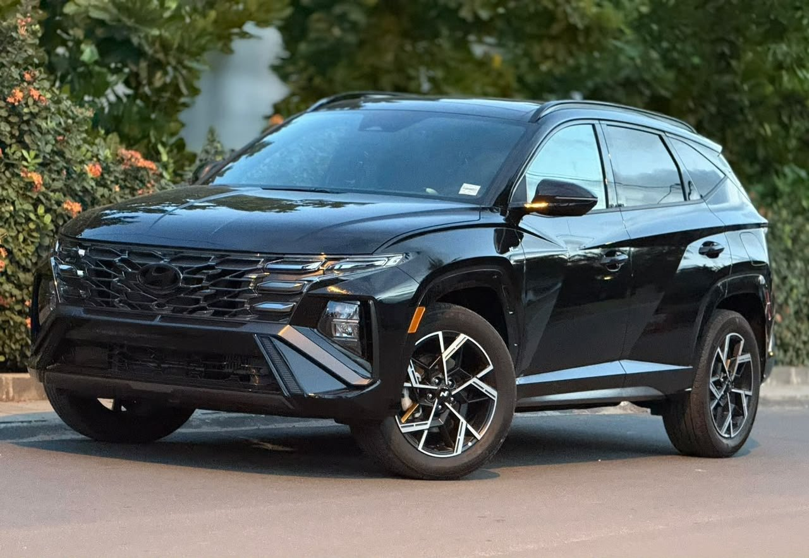

À vendre
Hyundai Tucson S Line Hybrid 2026/2027
2026/2027 · Essence hybride · Automatique · HTRAC 4WD
31 000 000 FCFA
Année annoncée2026/2027
Finition annoncéeS Line Hybrid
TransmissionHTRAC · 4WD
BoîteAutomatique · 6 rapports
ÉnergieEssence hybride
Cylindres4
Motorisation annoncée1.6 T
Puissance annoncée239 ch
ÉquipementFull options
HTRAC, quatre roues motrices et full options selon le vendeur. Motorisation essence hybride 1.6 T, 4 cylindres, puissance annoncée de 239 ch et boîte automatique à 6 rapports.
Contactez TVB CI AUTO pour les informations, la position du véhicule et une visite.